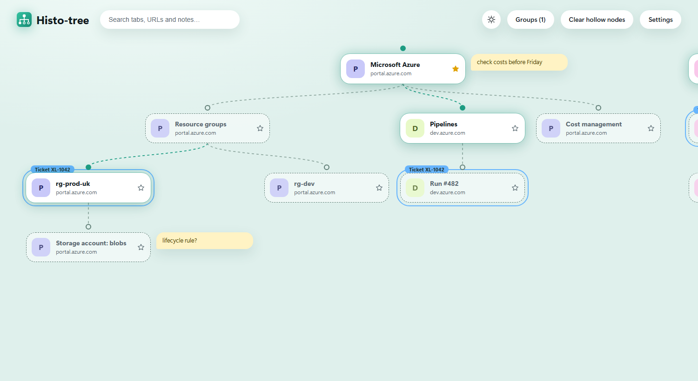

A tree, not a list
See where each page came from: the portal, the blade you opened from it, the resource behind that. One look and the whole trail is there.
Histo-tree turns the trail of pages you open into a tree you can read at a glance, so you never lose how you got somewhere.

Every tab you open from scratch becomes a root. Every link you follow becomes a branch. The rest is making that tree useful.
See where each page came from: the portal, the blade you opened from it, the resource behind that. One look and the whole trail is there.
Open tabs are solid cards with a glowing dot. Closed ones turn hollow with a dashed outline. Click either to jump to the tab or reopen the page.
Star any page and it survives restarts and clean-ups, along with the path that leads to it.
Pin a sticky note beside any card, or rename a card to what it actually is. Notes and names are searchable.
Colour-code pages across different trees, then focus a group to dim everything else. Select, rename, recolour and jump to groups from one menu.
Drag a card sideways to reorder it among its siblings, with a marker showing where it will land. Prefer the keyboard? Use Move left and Move right.
Find a page by its title, address, name or note. Matches light up and the rest of the tree fades back.
Right-click a card and ignore its site. Banking, webmail, anything you do not want in the tree is never recorded.
Follow your system theme or pick one, choose the colour of the glow, switch to compact cards, and turn parts of the interface off.
Apps like the Azure Portal change the page without reloading it. Histo-tree follows those route changes, so each blade gets its own card.
Every card is a real button, menus open from the keyboard, and screen readers hear each card's name, state, notes and groups.
Everything is stored locally in your browser. There is no account, no server and no tracking, and private windows are never recorded.
There is nothing to set up. Browse the way you always do.
Alt+Shift+T. Your whole trail appears as one tree.This is the real interface running on sample data. Nothing you do here is saved.
Store listings are not available yet, so for now you build it once and load it into your browser.
npm install
npm run buildThat creates dist for Edge and Chrome, and dist-firefox for Firefox.
edge://extensionsdist folderchrome://extensionsdist folderabout:debugging#/runtime/this-firefoxdist-firefox/manifest.jsonEdge and Chrome are tested in the real browsers. The Firefox build passes Mozilla's add-on checker but has not yet been run in a real Firefox, so treat it as experimental. A temporary Firefox add-on is removed when Firefox closes.